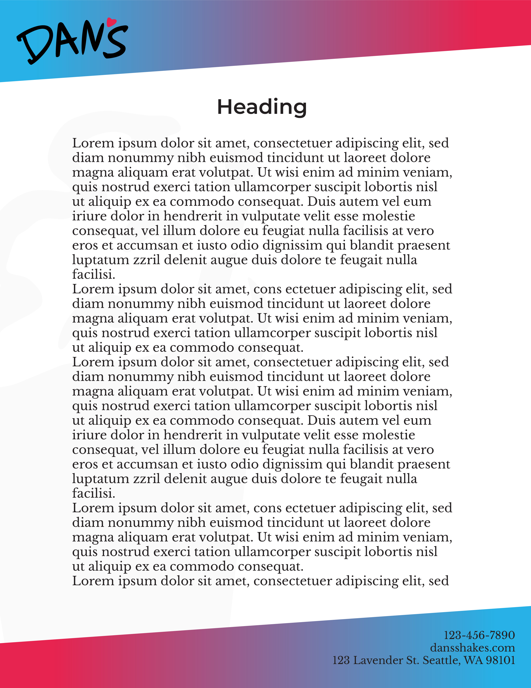
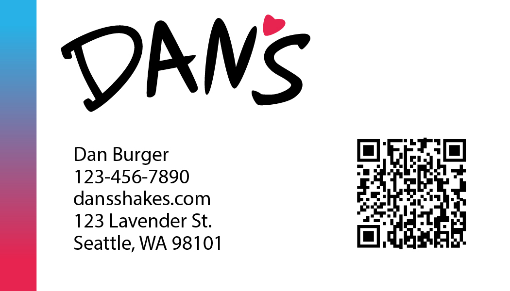
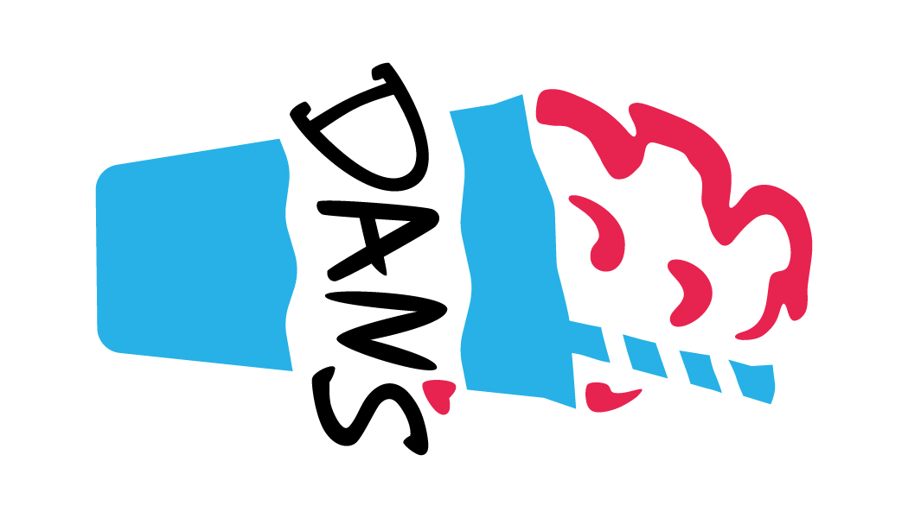
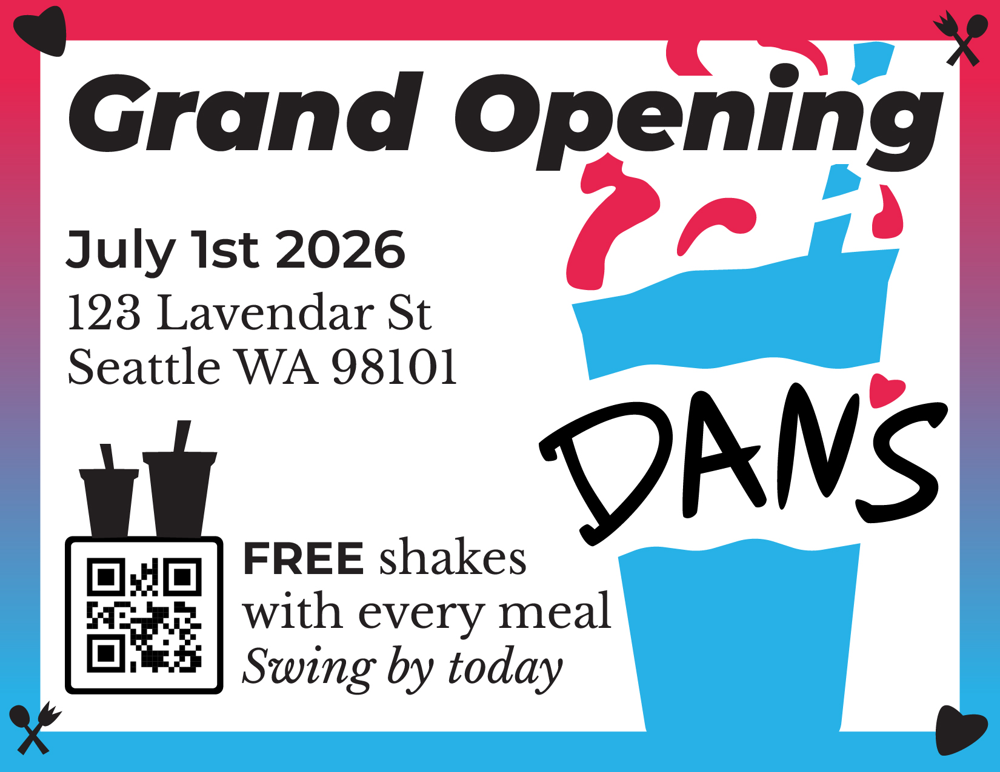
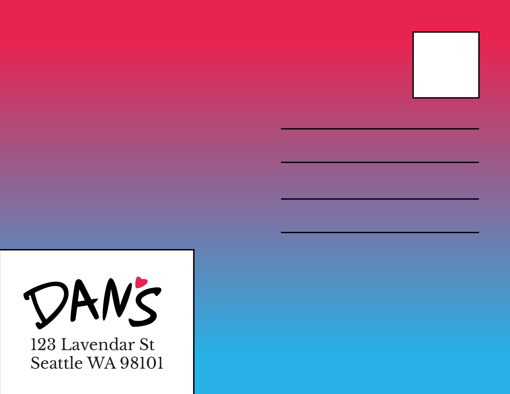
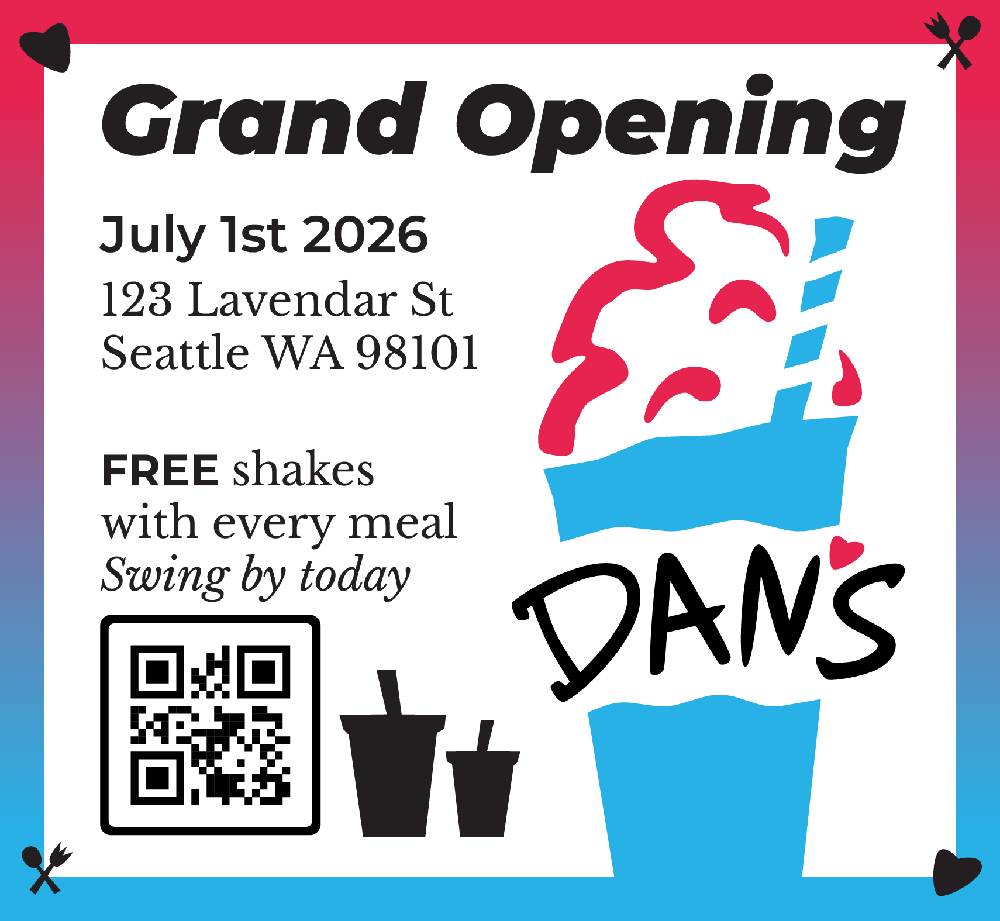
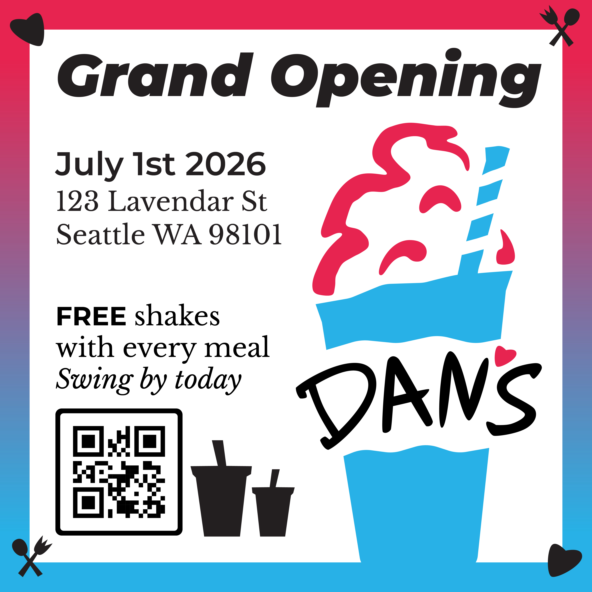

Back to work
Brand identity + collateral
Dan's
A burger and shake restaurant concept with a friendly logo system, punchy print pieces, and a flexible pattern that ties the whole brand together.

Final Assets
Brand touchpoints that feel like one restaurant.







Menu System